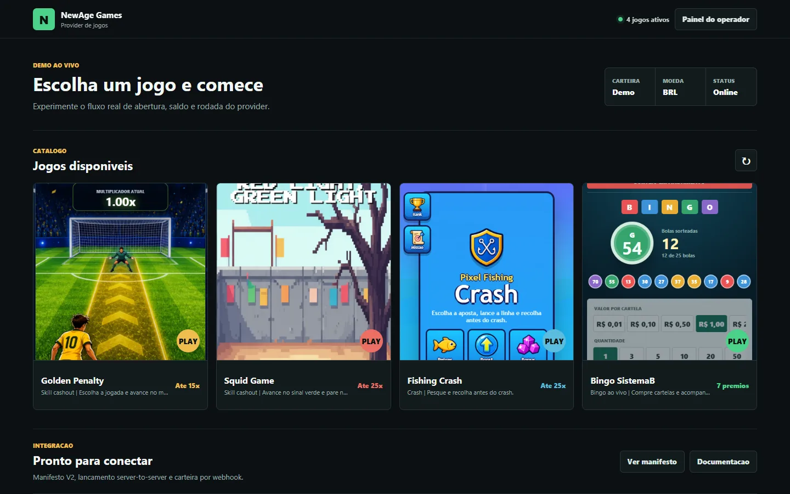
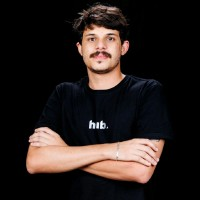
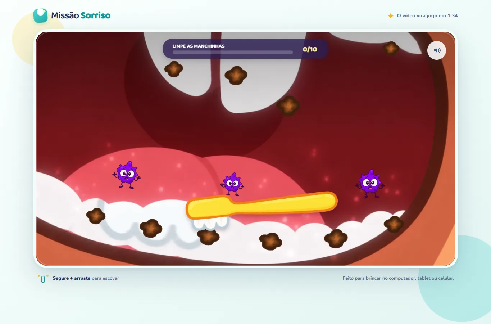
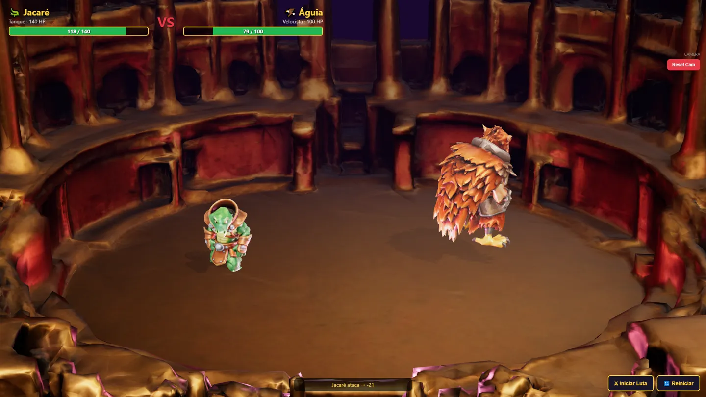
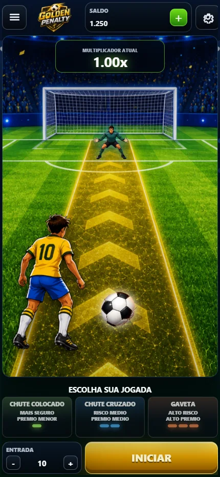

Demo ao vivo ↗01 / GAME PLATFORM · 2026
NewAge Games
Provider central para catálogo, sessões, rodadas, RTP, auditoria e integração server-to-server.
Olá, eu sou Lucas Augusto
EU CONSTRUO infraestrutura que escala
Da infraestrutura ao frame final: projeto sistemas confiáveis, agentes que executam trabalho real e experiências interativas para a web.
PROFILE.JSON · LEGÍVEL POR HUMANOS & AGENTES ↗
01 / Trabalho selecionado
Poucos cases. Contexto real.
Engenharia visível.

Demo ao vivo ↗01 / GAME PLATFORM · 2026
Provider central para catálogo, sessões, rodadas, RTP, auditoria e integração server-to-server.

Código aberto ↗02 / INTERACTIVE VIDEO · 2026
O vídeo congela no frame certo e vira três jogos infantis — com áudio, toque, colisões e retomada invisível da narrativa.

Ver experimento ↗03 / 3D GAME R&D · 2026
Pipeline experimental de personagens gerados, modelagem 3D, auto-rig, animações e batalha executada no navegador.
04 / AGENTIC SYSTEMS · OPEN SOURCE
Plataforma de agentes com workspaces persistentes e uma camada local-first de proteção para ferramentas, memória e prompt injection.
02 / Game engineering
Canvas, Phaser, Three.js,
multiplayer e RGS.

GAMEPLAY → BACKEND → OPERAÇÃO
Desenho o loop, implemento a sensação do jogo e conecto a experiência a carteira, sessão, auditoria, configuração de RTP e observabilidade.
03 / Experiência
Hub Formaturas e Experiências
Arquitetura, automação, observabilidade e governança de ambientes que suportam operações críticas, integrações e produtos internos.
FlowCode
Liderança técnica, automações, portais, dashboards, integrações de IA e pipelines que aceleraram o ciclo de desenvolvimento.
Kafe Apps
Direção técnica de produtos, uso de IA no core dos sistemas e gestão de times trabalhando com web, Bubble e FlutterFlow.
Universidade Federal de Goiás
Goiânia, Goiás — a base para uma carreira construída entre engenharia, produto e experimentação.
04 / Stack
CI/CD, deploy automatizado, observabilidade, Linux, containers, segurança e infraestrutura como código.
MCP, tool calling, memória, runtimes locais, guardrails, gateways de modelo e sistemas multiagente.
Canvas, Phaser, Three.js, Colyseus, animação, integração de provider e experiências mobile-first.
Tem um sistema difícil, uma ideia com IA
ou um jogo que precisa sair do papel?